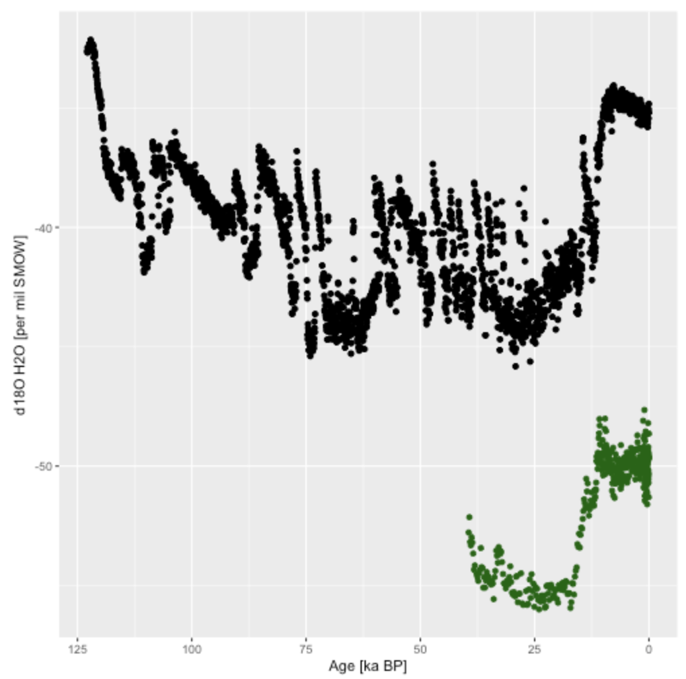
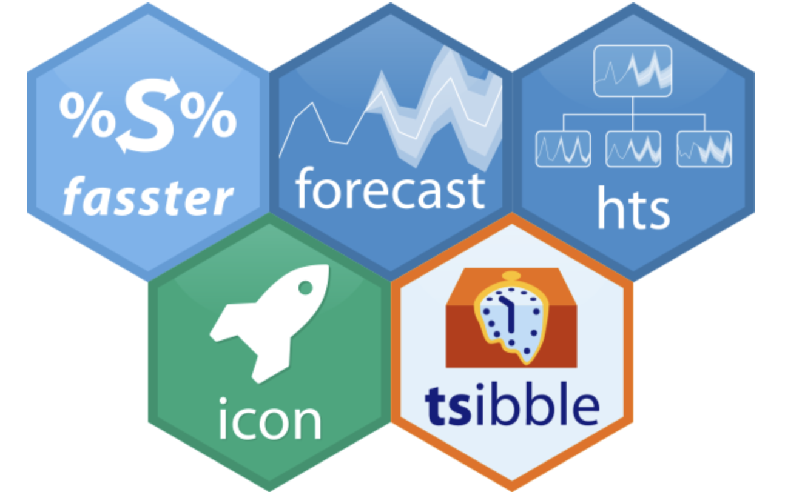

Jun 6, 2018
Software 📦
CRAN:  GitHub:
GitHub: 
New packages
- A new package
tabulizer(v0.2.1) is on CRAN.tabulizeris a client for the Tabula Java library, which can extract tables from PDF documents. See also the companion package tabulizerjars. See the tabulizer vignette to get started.

- A new package
ssh(v0.2) is on CRAN.sshconnects you to a remote server over SSH to transfer files via SCP, setup a secure tunnel, or run a command or script on the host while streaming stdout and stderr directly to the client. See the ssh vignette to get started.
Releases
- A new version (
v2.5.3) ofFedDatais on CRAN - automates downloading geospatial data available from several federated data sources. See the FedData NEWS for changes. Check out the FedData docs to get started.
add httr to package imports
- A new version (
v0.5.1) ofroadoiis on CRAN - a client for Unpaywall - provides unified access to various data sources for open access full-text links including Crossref and the Directory of Open Access Journals (DOAJ). See the roadoi release notes for changes. Check out the roadoi vignette to get started.
declare lintr dependency
- A new version (
v0.2.8) ofworrmsis on CRAN - client for World Register of Marine Species. See the worrms release notes for changes. Check out the worrms vignette to get started.
use vcr and webmockr for unit test stubbing
- A new version (
v0.2-5) ofdbhydroRis on CRAN - client for programmatic access to the South Florida Water Management District’s DBHYDRO database. See the dbhydroR NEWS for changes. Check out the dbhydroR docs to get started.
various housekeeping things
- A new version (
v0.1.7) offingertipsRis on CRAN - client for Fingertips, contains data for many indicators of public health in England. See the fingertipsR NEWS for changes. Check out the fingertipsR vignettes to get started.
nearest_neighbours()gains new parameter - A new version (
v1.8) ofpdftoolsis on CRAN - text extraction, rendering and converting of pdf documents. See the pdftools NEWS for changes. Check out the pdftools README to get started.
run configure script in bash
- A new version (
v0.4.0) ofrdataciteis on CRAN - client for DataCite. See the rdatacite release notes for changes. Check out the rdatacite README to get started.
fixes to pagination
- A new version (
v1.0.1) ofessurveyis on CRAN - client for DataCite. See the essurvey NEWS for changes. Check out the essurvey vignette to get started.
minor bug fix
- A new version (
v0.2.5) ofstplanris on CRAN - functionality and data access tools for transport planning, including origin-destination analysis, route allocation and modelling travel patterns. See the stplanr release notes for changes. Check out the stplanr docs to get started.
new function
line_via()` for identifying intermediary points on a transport network
Software Review ✔
We accept community contributed packages via our onboarding system - an open software review system, sorta like scholarly paper review, but way better. We’ll highlight newly onboarded packages here. A huge thanks to our reviewers, who do a lot of work reviewing (see the blog post on our review system), and the authors of the packages!
If you want to be a reviewer fill out this short form, and we’ll ping you when there’s a submission that fits in your area of expertise.
There’s no now approved submissions or new submissions in the past two weeks.
On the blog
technotes
Scott Chamberlain wrote two posts in the past few weeks:
- taxize: seven years of taxonomy in R - The taxize package has been around for seven years now. This post covers some of the noteable milestones and covers some upcoming changes.

- vcr: record and replay HTTP requests
: This post marks the first CRAN release of vcr, a package that’s been in the works for a few years.
vcrhelps you cache HTTP responses in unit tests. Currently works withcrul, but integrations with curl and httr are in the works.
Use cases
The following eight works use/cite rOpenSci software:
- Han et al. wrote a paper citing rentrez: A snapshot of translational research funded by the National Institutes of Health (NIH): A case study using behavioral and social science research awards and Clinical and Translational Science Awards funded publications 1
- Barneche et al. used rotl in their paper Fish reproductive-energy output increases disproportionately with body size 2
- Salmon et al. used rOpenSci’s rtimicropem and EML packages in their paper Wearable camera-derived microenvironments in relation to personal exposure to PM 2.5 3
- Pearse & Chamberlain cite fulltext and suppdata in their paper on suppdata: Suppdata: Downloading Supplementary Data from Published Manuscripts 4
- Tang cited plotly in their paper autoplotly: An R package for automatic generation of interactive visualizations for statistical results 5
- Moat et al. rredlist in their paper Refining area of occupancy to address the modifiable areal unit problem in ecology and conservation 6
- Inman cited/used rgbif in their thesis Improving Species Distribution Models with Bias Correction and Geographically Weighted Regression: Tests of Virtual Species and Past and Present Distributions in North American Deserts 7
- Barber cited rfishbase in their paper Marine-derived Nutrient Cycling In The St. Croix River, Maine 8
In the news
Bob Rudis wrote a post citing ssh: The Power of Standards and Consistency
Ruben Arslan used our rcrossref package in an analysis Replication in the Reproducibility Project Psychology and citations
Update with 2018 citation counts (w/ @sckottie's rcrossref).
— Ruben C. Arslan (@rubenarslan) May 17, 2018
Bad news: It appears whether a study replicated in the RPP did not affect at all how often it was subsequently cited. Bit sad, but maybe expected given that @OSFramework stressed aggregate resulthttps://t.co/1wJjCHIGzs pic.twitter.com/vnkAgMfoqN
Paul Oldham wrote a blog post on Creating A Bibliography with rcrossref
Data on 96 million publications at your fingertips with rcrossref https://t.co/IhCDN78DTc @rOpenSci @sckottie #rstats
— Paul Oldham #FBPE (@junglepaul) May 24, 2018
Paul Campbell used opencage in a Shiny app at https://www.cultureofinsight.com/portfolio/crimewatch/
Built a mapping interface to the UK Police data base with some GPS and geocoding baked in. Checkit to find out what sort of mischief has been going down on your turf. h/t to @nj_tierney and @rOpenSci for the packages used! #rstatshttps://t.co/4jbehjpqIB
— Paul Campbell (@PaulCampbell91) May 24, 2018
Katrin Leinweber is using pangaer in a workshop

Mitchell O’Hara-Wild is using magick to make a wall of hex stickers for useR 2018 - https://github.com/mitchelloharawild/hexwall

Keep up with rOpenSci
- Mailing list: Sign up with an email address to get this newsletter sent to your inbox -> ropensci.org/#subscribe
- Alternatively, you can subscribe to this newsletter via our XML feed at https://news.ropensci.org/feed.xml or our JSON feed at https://news.ropensci.org/feed.json
- rOpenSci on Twitter: @ropensci
- The rOpenSci blog at ropensci.org/blog - you can subscribe in any RSS aggregator, or manually via https://ropensci.org/feed.xml. We also announce new blog posts on our Twitter account.
Footnotes
-
Han, X., Williams, S. R., & Zuckerman, B. L. (2018). A snapshot of translational research funded by the National Institutes of Health (NIH): A case study using behavioral and social science research awards and Clinical and Translational Science Awards funded publications. PLOS ONE, 13(5), e0196545. https://doi.org/10.1371/journal.pone.0196545 ↩
-
Barneche, D. R., Robertson, D. R., White, C. R., & Marshall, D. J. (2018). Fish reproductive-energy output increases disproportionately with body size. Science, 360(6389), 642–645. https://doi.org/10.1126/science.aao6868 ↩
-
Salmon, M., Milà, C., Bhogadi, S., Addanki, S., Madhira, P., Muddepaka, N., … Tonne, C. (2018). Wearable camera-derived microenvironments in relation to personal exposure to PM 2.5. Environment International, 117, 300–307. https://doi.org/10.1016/j.envint.2018.05.021 ↩
-
D Pearse, W., & A Chamberlain, S. (2018). Suppdata: Downloading Supplementary Data from Published Manuscripts. Journal of Open Source Software, 3(25), 721. https://doi.org/10.21105/joss.00721 ↩
-
Tang, Y. (2018). autoplotly: An R package for automatic generation of interactive visualizations for statistical results. Journal of Open Source Software, 3(24), 657. https://doi.org/10.21105/joss.00657 ↩
-
Moat, J., Bachman, S. P., Field, R., & Boyd, D. S. (2018). Refining area of occupancy to address the modifiable areal unit problem in ecology and conservation. Conservation Biology. https://doi.org/10.1111/cobi.13139 ↩
-
Inman, R. (2018). Improving Species Distribution Models with Bias Correction and Geographically Weighted Regression: Tests of Virtual Species and Past and Present Distributions in North American Deserts (Doctoral dissertation, Arizona State University). https://search.proquest.com/docview/2040502527 ↩
-
Barber, B. L. (2018). Marine-derived Nutrient Cycling In The St. Croix River, Maine (Doctoral dissertation, The University of Maine). http://usgs-cru-individual-data.s3.amazonaws.com/jzydlewski/thesis_dissert/Barber%20Betsy%20Dissertation%202018-1.pdf ↩